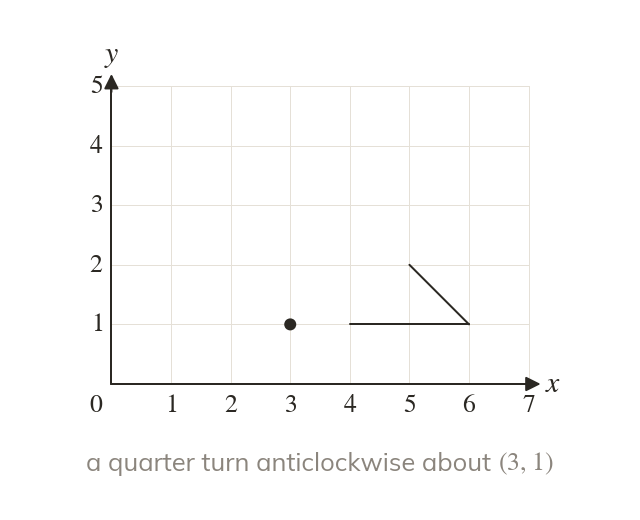
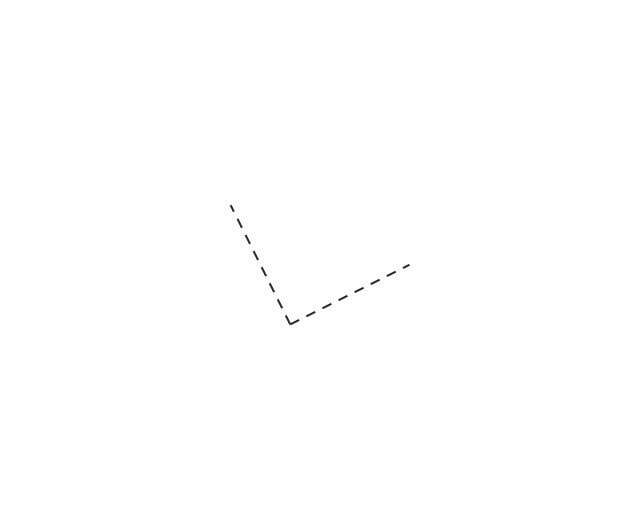
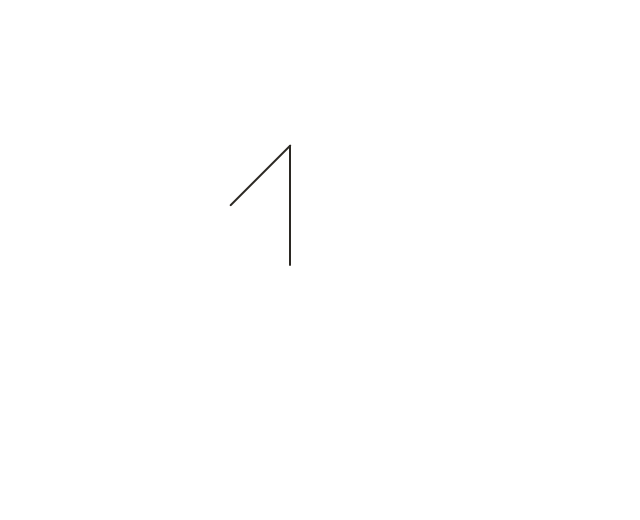
Three things define it
A rotation needs a centre, an angle and a direction. Every point stays the same distance from the centre as it turns.
A rotation turns a shape about a fixed point, like a clock hand or a wheel. Today you rotate shapes exactly, from a centre, an angle and a direction.
Work down the page at your own pace. Write every answer in your book first, then click to check it.
Read each card, then follow the worked examples one step at a time.



A rotation needs a centre, an angle and a direction. Every point stays the same distance from the centre as it turns.
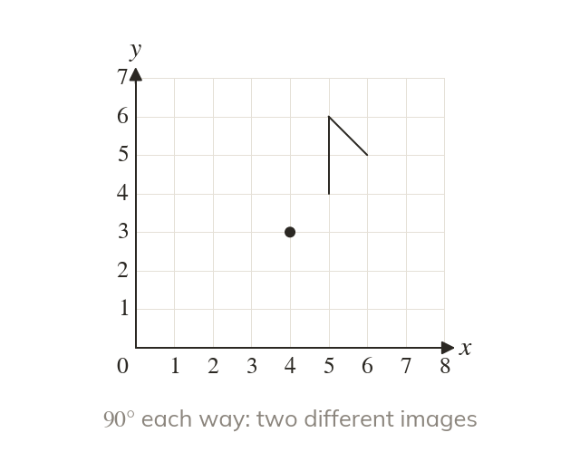
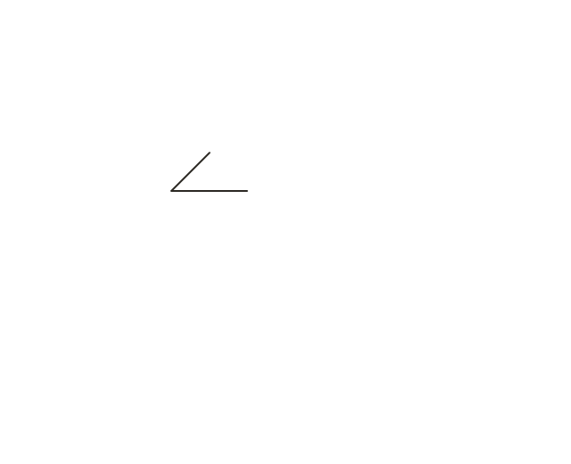
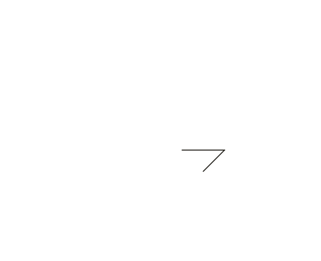
Clockwise and anticlockwise quarter turns give different images. A half turn is the same either way.
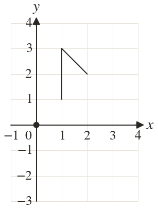
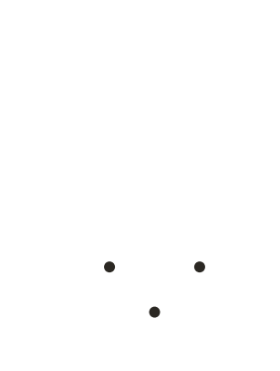
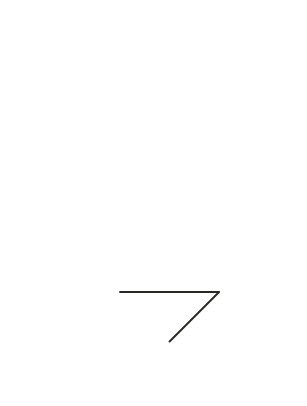
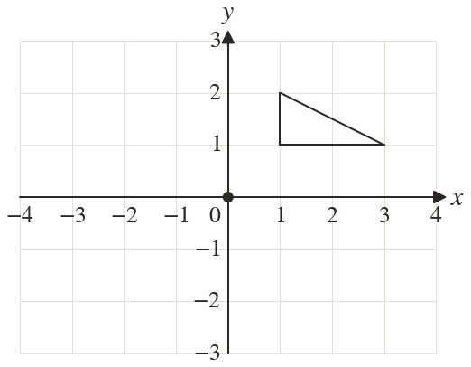
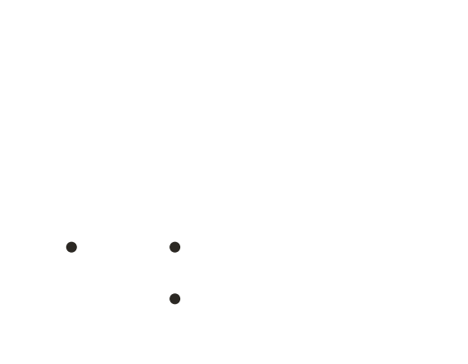
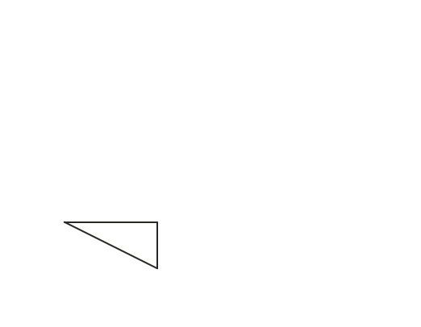
Pick an answer. If it's wrong, the feedback tells you which mistake it was.
Printable worksheet — the questions with room to work.


Read each card, then follow the worked examples one step at a time.
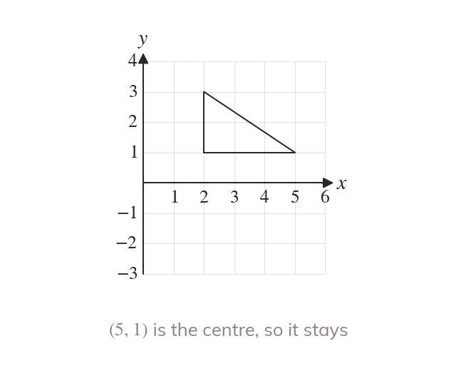
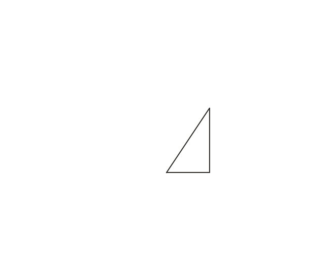
When the centre is a corner of the shape, that corner stays where it is. The rest of the shape turns around it.
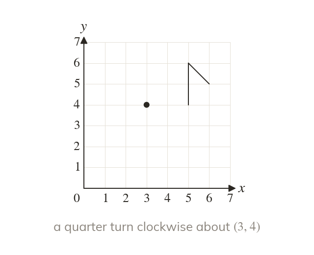
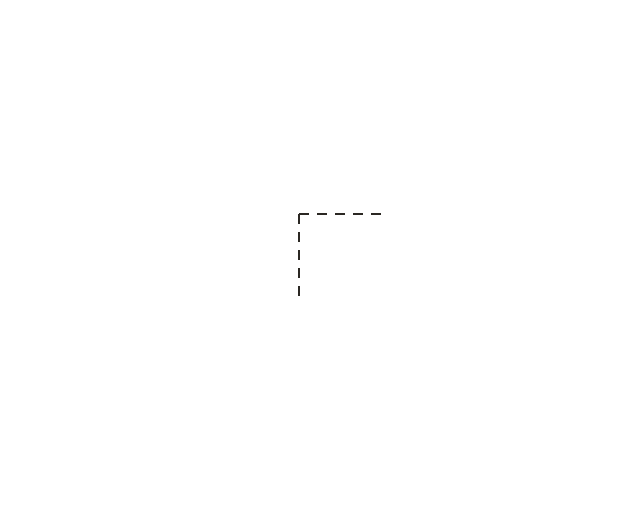
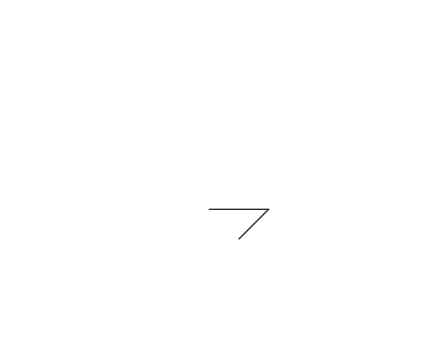
With the centre outside, the whole shape swings round it. Tracing paper pinned at the centre shows where it lands.
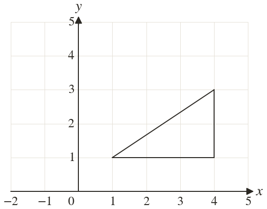
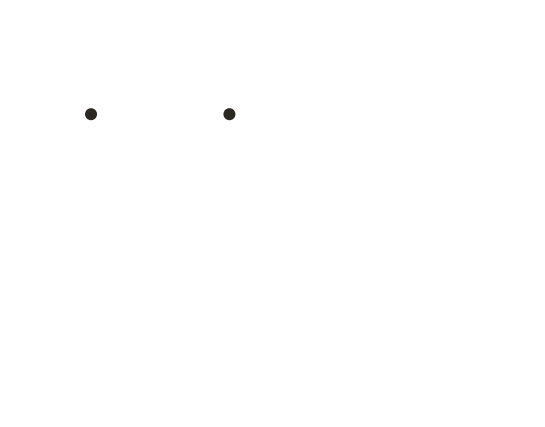
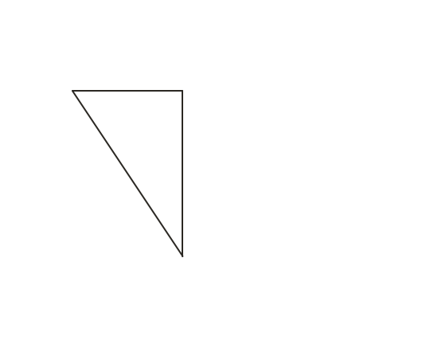
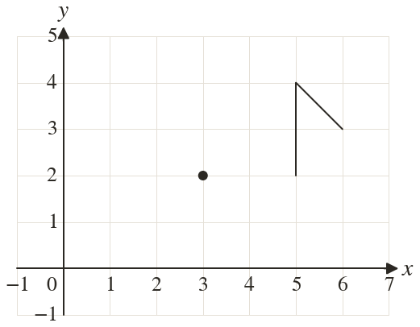
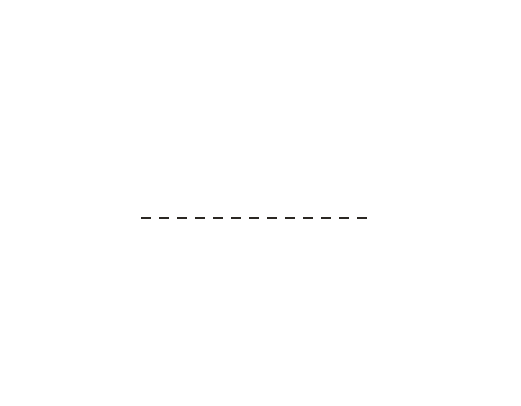
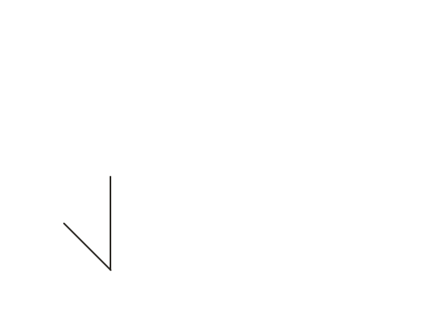
Pick an answer. If it's wrong, the feedback tells you which mistake it was.
Finished? Next lesson: 7.18.5 Describing Transformations.
Log in, then search for a code to practise that skill.
Videos, worksheets and more on each part of this lesson.